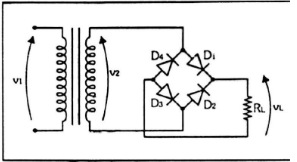
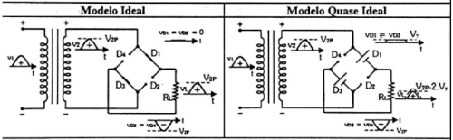
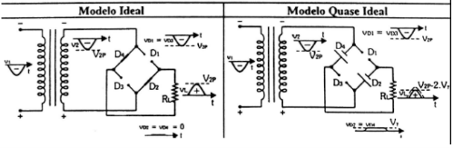
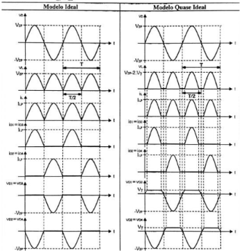

Retificador de Onda Completa em Ponte
Este retificador de onda completa emprega quatro diodos, permitindo a utilização total da tensão fornecida pelo transformador. Isso resulta na retificação da tensão completa do secundário do transformador. A presença de quatro diodos neste circuito é fundamental para assegurar uma retificação eficiente e aproveitar ao máximo a potência disponível.
Dado que este sistema emprega 4 diodos, durante o semiciclo positivo da tensão de V2, os diodos (D1 e D3), diretamente polarizados, conduzirão, enquanto os diodos (D2 e D4) não conduzirão devido à sua polarização inversa. Essa configuração permite a condução seletiva dos diodos, otimizando a retificação e o aproveitamento eficiente da tensão fornecida pelo transformador.
Quando a tensão (V2) no semiciclo é negativa, os diodos (D1 e D3), que estavam conduzindo anteriormente, deixam de conduzir, ao passo que os diodos (D2 e D4) entram em condução. Essa alternância no comportamento dos diodos durante os diferentes semiciclos é fundamental para o funcionamento eficiente do sistema de retificação de onda completa.
Observação: A frequência da tensão na carga é o dobro da frequência da tensão no transformador primário. Essa relação de frequências é um aspecto importante a ser considerado no projeto e operação do sistema, influenciando diretamente no desempenho e comportamento dinâmico do circuito.
